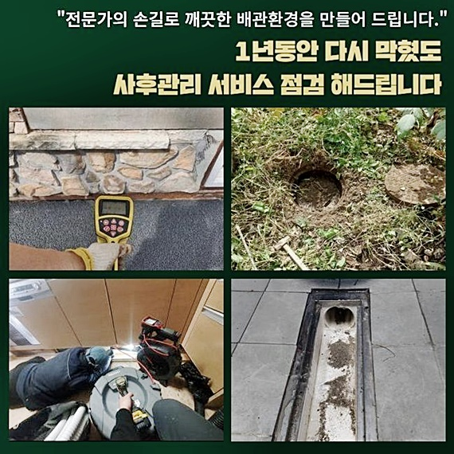
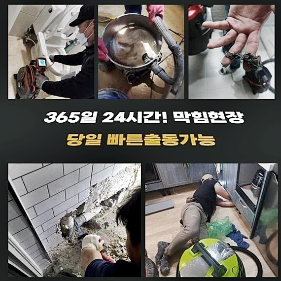
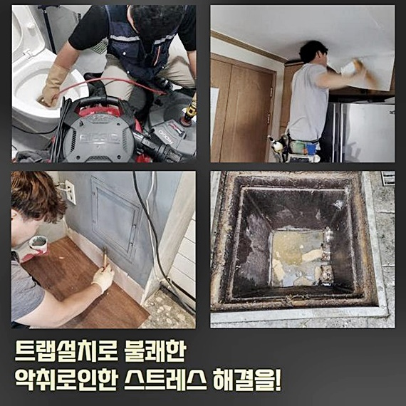
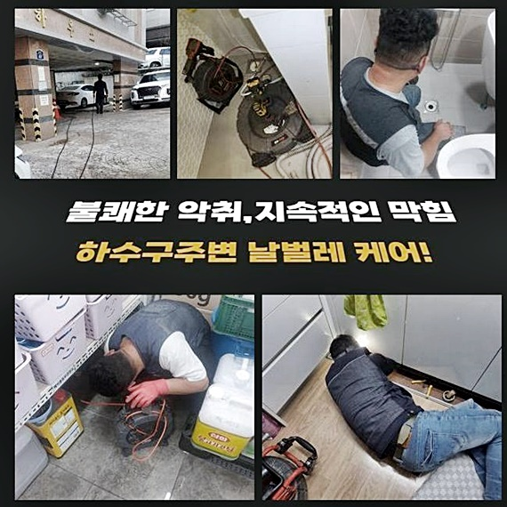
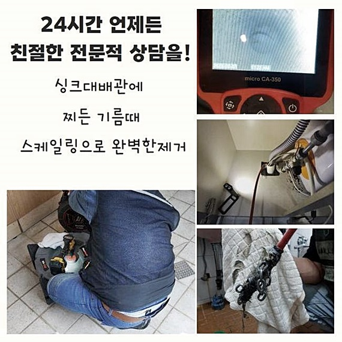
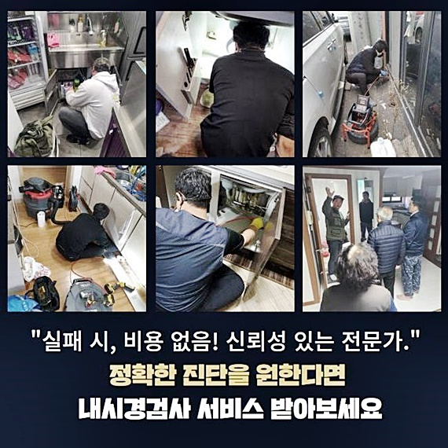

🏠 오금동세탁실뚫음 송부동 악취차단 설비공사
용인시 처인구 고압세척 전문 시공 후기

📋 작업 개요
- 위치: 용인시 처인구, 수원시 영통구, 화성시 동탄
- 서비스 유형: 고압세척, 내시경점검
- 작업 일시:
- 업체명: 하수구수사대 (010-5615-2118)
🔍 문제 상황
오금동세탁실뚫음 송부동 악취차단 설비공사
오수를 다량 배출시키는 한 사장님께선는 의외로 많은 분들이 물빠짐 정체 현상을 경험하십니다
당연하겠지만 조리과정 중에 기름기들이 배수관으로 흐르고 이로 인해 배수구들이 막히게되고 주위에 있는 용품들을 써본 후에 문제가 해결될 수도 있겠으나 얼마못가 문제가 생길거에요
난다긴다하는 업체들께 연락해보아도 하루 일을 중단해야하는 상황이 생기게되니 마냥 쉬울수만은 없는데요
전문적이지 못한 방식으로 한시적으로나마 뚫는다고 하여도 언제 그랬냐는 듯 또 생길테니 이러한 사태를 방지하기위해서는 전문가와 함께 확실히 세척하는것이 좋아요
최근엔 주방의 배수구로 수돗물이 빠지질 않아 주방의 일들을 할 수 없다 다급한 목소리로 전화를 하셨습니다
신속히 찾아가 문제들을 확인해주었어요
역류증세도 야기되며 물빠짐은 물론 잔해물들도 솟구쳤어요
배수관에 이물질의 퇴적이 도래했다는 걸 반증하는건데요 어디쪽에서 문제를 일으키는지 체크해봐야 해당 상황에서 벗어날 수 있어요
곧장 내시경을 투입시켜서 안이 어떻게 이루어져있는지 어느지점에 증상이 대두되는지 살폈습니다
노즐들이 굵지않아 내측에 이오수가 축적된 구경이 넓지않은 하수관에서 충분히 사용할 수 있어요 들여다보았더니 수직배관도 목격할 수 있었어요
어디든지 이리저리 휘므로 수직으로 수직배관도 자세히 관찰할 수 있답니다

🔎 원인 분석
💡 전문가 진단: 정밀 진단 장비를 사용하여 슬러지의 고착 여부를 판명하고 타격/세척 작업을 실시했습니다.
조리공간에서 이용되는 배수관이라 입구에서 기름들과 오염물의 뭉치들로 범벅된 상황이였습니다
심층부까지 살피니 고압의 분사 청소들이 필요했죠
고객님들이 질문들을 주로 하시는 작업방식인 고수압 청소방법은 전문가들이 조속히서 찾아뵈어 증세를 목도한 뒤 필요성에 대해 안내하니 무턱대고 고압수청소를 이행하는 무모함은 걱정하지 않으셔도 된다 장담합니다
공동관로도 문제가 심각한것이 파악되어서 탐지도구를 써서 어느 배수설비가 문제가 되는지 살피기로 했죠
하수관으로 내시경장치를 이용해주며 관로탐지장치들을 가용해요
이 장치로 막혀버린 지점을 확인합니다
약간의 거리감이 있어도 투입시킨 라인들로 그 거리를 예측하였습니다
반대로 집수라인도는 매립된 모습이 길어 관로탐지장치들을 사용한 뒤 적절한 부위를 파악해주는데요
막히게 된 부위를 관찰하였더니 바깥부터 내측 라인까지 막히게된 사실을 파악했어요
지속적으로 배수장애가 발생되며 2차피해를 양산한 기조는 외부 배수로가 제 기능을 못해서였는데요
기름들이 진흙과같이 쏟아져 나왔습니다
기름성분을 많이 이용되는 식당이기에 거주지와는 비교되지 못할만큼 상당량의 기름뭉치를 확인했는데요
지속적으로 식재료를 다루고 그릇을 씻게되면 배수관으로 잔해물이 흘러가는 현상은 자연스러운 것인데요

🔧 작업 과정
증상이 발생되었을 때 선제적으로 조치들을 실천하신다면 오랜시간 동안 문제 없이 쓸 수 있겠습니다
물빠짐이 심상치않으면 지속적으로 관리함이 최선이에요
같은 맥락으로 기름들을 많이 이용하던 곳이라면 끓고있는 수도를 배수관으로 들이붓고 기름자체를 청소하고자하나 적합한 대응법은 아니죠
일차적으로 배수구의 기름오염원들을 청소해준 뒤 안쪽부터 천천히 청소를 실시했습니다
해당 단계에선 샤프트장비로 하수관으로 케이블들을 투입시켜 체인들이 돌면서 딱딱해진 오염원들을 신속히 탈락시켜줘요
벽측에 잔존하는 것들도 노커에 엉키며 제거까지 이뤄지죠 고압의 청소를 버텨내지 못할정도로 노후된 배관일 시 샤프트장비로 이것과같은 결과를 만들어낼 수 있죠
내측과 외측에서도 문제들이 발생된 상황으로 양 공간에서 작업들이 수반되어야 했어요
바깥에서 내측까지 샤프트장비 사용을 실시해준다면 고착물이 순서대로 청소되며 물길이 열리게 되요
배수관으로 잔여물질들이 상당했던 탓에 꾸준히 샤프트도구 체인으로 기름들을 세척했는데요
여태 하수관을 이용하는 와중 악취자체가 심하다고 하셨는데요 세척과정이 완료된다면 냄새들이 생겨나는 불상사는 걱정할 필요가 없어요
외부 하수구로는 사이즈도 사이즈고 지금까지 관리가 안되어 단단해진 슬러지가 많았습니다
그리하여 뜰채까지 동원해 물들을 걸러주며 작업했죠
이물이 청소되며 통수가 조속히 이뤄지니 이후엔 세척과정이 훨씬 어려움없이 이뤄졌습니다 집수라인은 보통 배관으로부터 빠져나오는 오수들이 해당 부위에 집수되어 배수되는데요
배수관으로 전체 배관 중에서 한 곳이 막혀버리게 될 시 전체적으로 심각하게 증세가 생겨납니다
지속해서 샤프트장치기기와 내시경기기를 삽입하여 검수와 작업합니다
내시경기기를 통해서 내측을 주시해주면서 또 다른 이상이 있진않은지 체크하기 쉽죠
하수관으로부터 외부라인으로 이어져있는 하수도를 전부 손봐줘요 탐지기장비를 통해서 꼼꼼하게 점검해 청소를 이어나갔어요
꼼꼼한 점검 덕에 구석까지 없애주어 빠르게 기름뭉치를 세척하는것이 용이했습니다
배수구로 집수라인도 길이들이 길기때문에 동시에 장비사용을 하여 연결되는 부분에도 세척을 이행시켰어요
안측에도 잔해가 존재하진않는지 내시경장비로 관찰을 이어갔어요 내시경으로 진단을 하니 언제 그랬냐는 듯 청결한 하수시스템을 목격했죠


✅ 작업 완료
종료에 앞서 배수구로 오수들이 빠지는지 체크해봐요
배수체크를 이행해보니 배수구로 답답한 기색없이 빠졌죠 요식업의 경우에는 찌꺼기들이나 식자재로 인하여 배수관이 막히게 됩니다
곧장 원인을 명확히 제거하고 필터망까지 설치하고 사용 시 수도를 흘려보낼때도 주의해야겠습니다
이와 더불어 주기성을 갖추고 관리해주시면 배수로가 제 기능을 하면서 이용하실 수 있죠
배수관으로 이상이 발생했을 시 부담없이 연락해보세요!



⚠️ 하수구 배관 막힘 예방 및 관리 가이드
- ✅ 머리카락, 비닐, 물티슈 등 물에 분해되지 않는 이물질은 절대 흘려보내지 마세요.
- ✅ 기름기 많은 식기는 설거지 전 키친타올로 먼저 기름때를 닦아내세요.
- ✅ 주기적으로 배수구에 뜨거운 물을 가득 부어주어 유지방 고착을 방지하세요.
- ✅ 작업 후 1년 이내 재발 시 무상 A/S 보증 서비스를 제공합니다.
💡 핵심 정리
- 확실한 장비 작업(내시경 점검 및 샤프트 스케일링)으로 원인을 뿌리 뽑습니다.
- 작업 후 1년 이내에 동일한 부위 재발 시 100% 무상 A/S 서비스를 보장합니다.
- 서울 · 경기 · 인천 전 지역에 24시간 언제든 긴급 출동할 수 있도록 항시 대기 중입니다.
❓ 자주 묻는 질문 (FAQ)
🚨 용인시 처인구 고압세척 문제로 고민이신가요?
정확한 원인 진단과 확실한 시공으로 재발 없는 해결을 약속드립니다.
24시간 긴급 출동 | 서울 · 경기 · 인천 전지역 | 1년 내 재발 시 무상 A/S